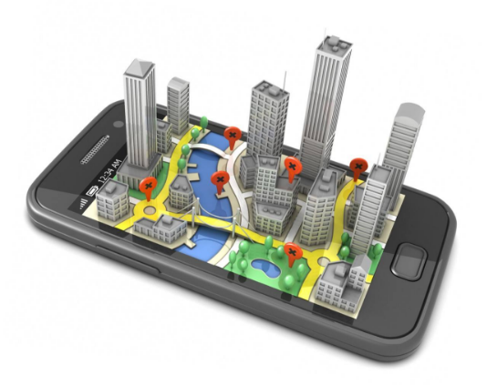

物联网+室内定位，助推多个行业管理智慧升级
物联网近几年发展十分迅速，工业、医疗、养老、城市建设、公共服务等越来越多的行业开始利用物联网技术提升管理和服务效率。在此背景下，寻息电子将精准室内外定位技术与物联网相结合，可以实现丰富多彩的行业应用，对于行业转型、管理模式升级、安全保障水平的提升都大有裨益。
在化工厂、电厂等高危环境，寻息电子精准室内外定位技术可对人员/物资进行精准定位管理，查看访客进出时间、移动轨迹等数据，实现对访客的数字化管理；可查看员工上岗/离岗时间、在某区域停留时间等数据，随时调遣人员执行相关工作；可查看被定位设备、物资的位置和移动轨迹，实现对仓储物资的智能化调度。通过在高危区域设置电子围栏，可实现“越界预警、滞留预警、长时间静止预警、超员/缺员预警”等功能，防止人员发生意外，提升厂区安全等级。
在隧道、地铁、码头、船舶等工程建设现场，可对施工人员进行实时定位，随时查看施工人员位置分布情况，让岗位考勤更加简单，同时防止人员发生意外。通过给人员佩戴具有“一键紧急求助”功能的定位卡片，当作业施工过程中遇到紧急险情可以一键求助，保障施工安全。
在养老院内，寻息电子精准定位技术可对老人进行实时位置监护，通过系统后台查看老人位置、移动轨迹等数据，防止老人走失；可对护工人员进行岗位高效管理，优化服务流程，提升养老院智能化监护水平。
在医院场景下，可应用于电子导医导诊、婴儿防盗、后勤人员定位管理、特殊病患定位监护、一键报警求助、医疗废弃物定位管理等方面。可为前来就医的病患提供精准导航，指引其前往某个科室，可以对特殊病患进行定位监护，防止发生意外等，减少医患纠纷，提升医疗智慧化水平。
在监狱、看守所等场景下，可以实现对于在押服刑人员及警员的实时定位，一旦警员有紧急情况，可以使用定位卡片发出紧急求助信号；控制室可以依据求助位置调配人员予以协助。同时可以实现动态点名、智能预警等功能，提高监狱管理效率。
在会展、展厅内，寻息电子室内外定位系统可实现智能化导览服务，一方面可以实时指引观众前往想去的展位，另外也可以对观众的位置数据进行精准统计，查看人员在展厅内的观览轨迹、停留时间等，实现办展效果精准分析。